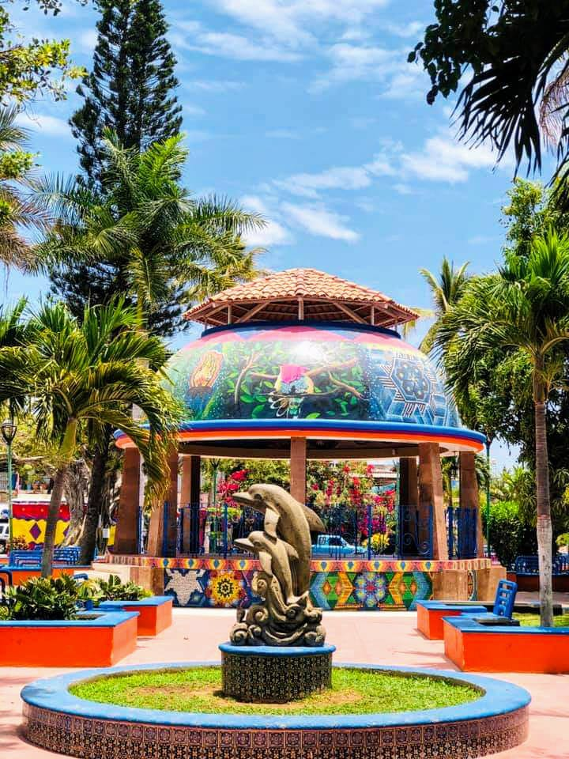
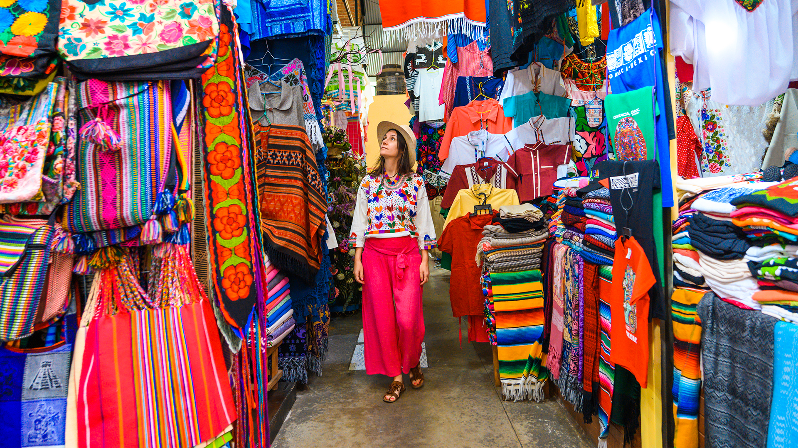
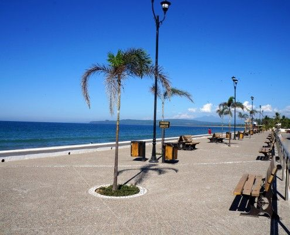

Playa La Peñita
Playa de arena dorada y oleaje tranquilo ideal para nadar, caminar y disfrutar del Pacífico. Ofrece actividades como paddleboard, kayak y observar atardeceres espectaculares. Tiene un malecón peatonal con bancos y vista al mar.
Playa de arena dorada y oleaje tranquilo ideal para nadar, caminar y disfrutar del Pacífico. Ofrece actividades como paddleboard, kayak y observar atardeceres espectaculares. Tiene un malecón peatonal con bancos y vista al mar.

Corazón del pueblo con zona peatonal, jardines, bancos y tienditas alrededor; es un punto ideal para conocer la vida local. La iglesia es un símbolo cultural y arquitectónico del lugar.

El mercado al aire libre más grande de la región. Artesanías, plata, comida y cultura local.

El corazón del pueblo costero donde puedes pasear por la avenida principal (Emiliano Zapata), disfrutar de restaurantes, cafés, tiendas locales y el malecón frente al mar construido para apreciar atardeceres y la brisa del Pacífico.